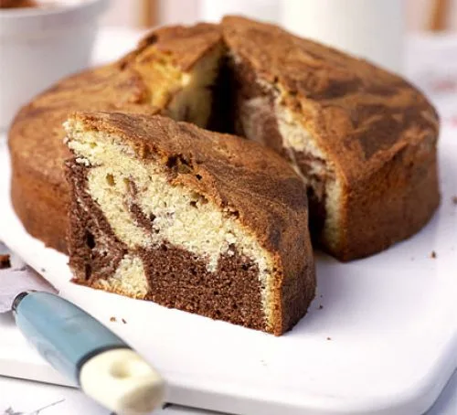

Marble Cake

Description
Marble cake is a classic childhood memory recipe. This chocolate and vanilla flavoured sponge like cake is a timeless favorite that suits any occation.
Ingredients
- 225g butter, softened
- 225g caster sugar
- 4 eggs
- 225g self-rising flour
- 3 tbsp milk
- 1 tsp vanilla extract
- 2 tbsp cocoa powder
Instructions
- Heat oven to 180C. Grease a 20cm cake tin and line the bottom with a circle of greaseproof paper.
- Mix all ingredients in a food processor and whizz for 1-2 min until smooth.
- Fold in the flour, milk and vanilla extract.
- Divide the mixture between 2 bowls. Stir in the cocoa powder in one of the bowls.
- Take 2 spoons and dollop the chocolate and vanilla cake mixes into the tin alternately.
- Take a skewer and swirl around the mixture in the tin a few times to create a marbled effect.
- Bake the cake for 45-55 min until a skewer inserted into the centre comes out clean.
- Let cool before serving.